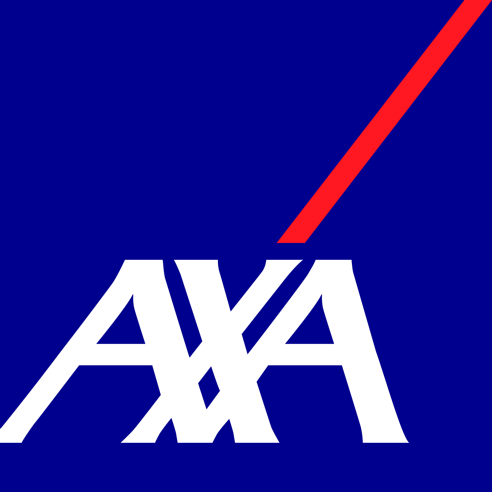

Activité 1 : Étude d’organisations
Le secteur choisi correspond à la lettre K, soit
Activités financières et d’assurance
.
AXA France
L’organisation étudiée porte le nom d’AXA France. Il s’agit d’une entreprise privée de nationalité française dont le siège social est situé à Nanterre (92).
Sa finalité est lucrative, puisqu’elle a pour objectif de proposer des services d’assurance, d’épargne et de gestion financière afin de générer des revenus.
Son champ d’action est à la fois national et
international : AXA France opère principalement en France,
mais fait partie du Groupe AXA
, présent notamment en Suisse,
Allemagne, Thaïlande et Indonésie.
AXA France est classée parmi les GE, car elle emploie plusieurs dizaines de milliers de salariés, bien au-dessus du seuil des 5 000 employés.
Elle produit exclusivement des services immatériels : protection des personnes et des biens, gestion des contrats d’assurance, épargne et accompagnement financier. Elle appartient donc au secteur tertiaire.
Les ressources mobilisées par AXA France sont variées :
- Ressources humaines : salariés répartis sur tout le territoire.
- Ressources financières : capitaux, réserves, primes et investissements.
- Ressources matérielles : siège à Nanterre, agences, équipements informatiques.
| Éléments de réponse | Justification |
|---|---|
| Nom | AXA France |
| Type | Entreprise privée |
| Finalité | Lucrative |
| Nationalité | Française |
| Champ d’action | National et international |
| Taille | Grande entreprise (GE) |
| Type de production | Services |
| Activité | Assurance, épargne, gestion financière |
| Secteur | Secteur tertiaire |
| Ressources | Humaines, financières et matérielles |
Banque de France
L’organisation étudiée porte le nom de Banque de France. Il s’agit d’une institution publique de nationalité française, dont le siège social est situé à Paris (1er).
Sa finalité est non lucrative, car elle vise à maintenir la stabilité financière et monétaire du pays.
Son champ d’action est principalement national, mais elle participe aussi à des instances internationales comme la BCE et le FMI.
La Banque de France emploie environ 9 000 salariés, ce qui lui permet d’assurer efficacement ses missions.
Elle produit exclusivement des services : politique monétaire, surveillance bancaire, contrôle de la solidité financière et analyses économiques. Elle appartient au secteur tertiaire.
Les ressources mobilisées par la Banque de France sont les suivantes :
- Ressources humaines : environ 9 000 salariés.
- Ressources financières : réserves et actifs financiers importants.
- Ressources matérielles : bâtiments administratifs et systèmes informatiques.
| Éléments de réponse | Justification |
|---|---|
| Nom | Banque de France |
| Type | Institution publique |
| Finalité | Non lucrative |
| Nationalité | Française |
| Champ d’action | National |
| Taille | Grande organisation |
| Type de production | Services |
| Activité | Politique monétaire et surveillance bancaire |
| Secteur | Secteur tertiaire |
| Ressources | Humaines, financières et matérielles |
UFC-Que Choisir
L’organisation étudiée porte le nom de UFC-Que Choisir – Assurance et finance. Il s’agit d’une association française dont le siège social est situé à Paris (12e).
Sa finalité est non lucrative : elle défend les intérêts des consommateurs dans le domaine de l’assurance et des services financiers.
Son champ d’action est national, avec des actions menées sur l’ensemble du territoire français.
L’association compte environ 150 salariés et mobilise plusieurs milliers de bénévoles.
Elle produit exclusivement des services immatériels : information, conseil, médiation, représentation des consommateurs et campagnes de sensibilisation. Elle appartient au secteur tertiaire.
Les ressources mobilisées par UFC-Que Choisir sont :
- Ressources humaines : salariés et bénévoles.
- Ressources financières : cotisations, subventions et dons.
- Ressources matérielles : bureaux, équipements informatiques et matériel de communication.
| Éléments de réponse | Justification |
|---|---|
| Nom | UFC-Que Choisir |
| Type | Association |
| Finalité | Non lucrative |
| Nationalité | Française |
| Champ d’action | National |
| Taille | Grande organisation |
| Type de production | Services |
| Activité | Défense et information des consommateurs |
| Secteur | Secteur tertiaire |
| Ressources | Humaines, financières et matérielles |